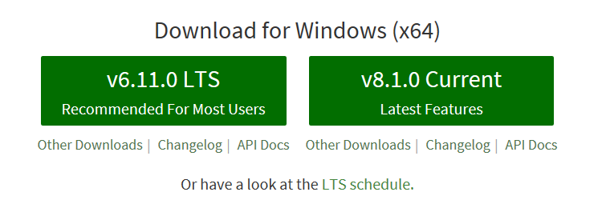
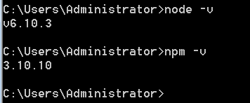
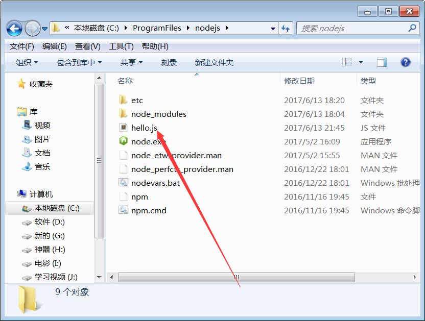
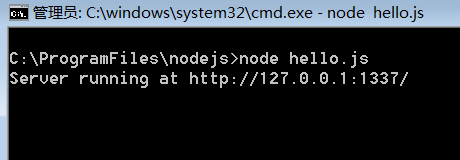

想不想让自己的JS代码运行在Node.js的服务器上呢？？？
Node.js这两年来很火哦，我们要不要一起来学习呢？？？虽然有点迟了，但是我们努力学，一定也是会有收获的，你说呢？？
我们可以直接到Node.js官网进行下载，Node.js的版本更新得太快了，最好还是到官网下载最新的版本。左边的LTS版本是稳定版本，我们一般使用这个。右边的Current是测试版，有时候也用到，因为我们是初学者，那就用左边的吧！！。

安装软件，直接打开安装包，全程下一步就行了，我们也没必要改安装路径了。
测试是否安装成功，运行命令窗口，输入如下指令。 如果结果一样就说明安装成功。 
在c盘找到node.js的安装路径。创建hello.js文件，如下图：

hello.js文件里的代码如下：保存好代码。
var http = require("http") ; //使用require指令来载入http模块
http.createServer(function(req,res){
/*此行代码说明
发送Head头部
HTTP状态值：200：OK
内容类型：text/plain
*/
res.writeHead(200,{'Content-Type':'text/plain'});
res.write('Hello World\n');
}).listen(1337,'127.0.0.1');
console.log('Server running at http://127.0.0.1:1337/');
在hello.js文件的目录下打开命令窗口（因为还没配置环境变量），执行node hello.js命令，结果如下图： 
不要关闭命令窗口，在浏览器网站栏输入：http://127.0.0.1:1337/ ，你将看到你的第一个node.js代码的hello world!!
我们来讲解一下代码
如果你细心观察浏览器的窗口，就会发现127前那个小圆圈在转个不停。意思就是说网页还在加载。加载一段时间后就卡住了。然后再刷新就报错，因为之前的还在加载。这个应该怎么描述我还不懂。我们来解释一下为什么为这样吧。
http.createServer(function(req,res){这行代码是用http模块创建一个服务，}).listen(1337,'127.0.0.1');这个的意思是说这个服务对这个端口监听和锁定这个ip，服务里面的代码呢就是res.writeHead(200,{'Content-Type':'text/plain; charset=utf-8'});这行代码是响应的一些头信息，res.write('Hello World\n');最后在文档中写下Hello World。我们写出内容后面加上个res.end("结束");请求结束。这时候就不会不停地加载了。
我们在写内容之前加上个console.log("访问成功");在后台输出提示得到请求。重新运行，刷新，发现后台有两次访问，这不是我们预期的效果。为什么会这样呢，是因为访问一次之后又回头访问。有什么办法解决呢。下面是完整的代码。
消除第二次访问，也有结束部分。
var http = require("http") ; //使用require指令来载入http模块
http.createServer(function(req,res){
/*此行代码说明
发送Head头部
HTTP状态值：200：OK
内容类型：text/plain
*/
res.writeHead(200,{'Content-Type':'text/plain; charset=utf-8'});
if(req.url!=="/favicon.ico"){ //清除第2此访问
console.log("访问成功");
res.write('Hello World\n');
res.end("结束");
}
}).listen(1337,'127.0.0.1');
console.log('Server running at http://127.0.0.1:1337/');
node.js真的很好用，以下这部分代码是搭建服务必须的：
var http = require("http");
http.createServer(function(req,res){
res.writeHead(200, {"Content-Type" : "text/plain; charset=utf-8"});
if(req.url!=="/favicon.ico"){//如果请求不是***
res.write("必须"+"\n");
console.log("告诉后台访问");
res.end("访问结束");
}
}).listen(1337);
console.log("Server run at http://127.0.0.1:1337");